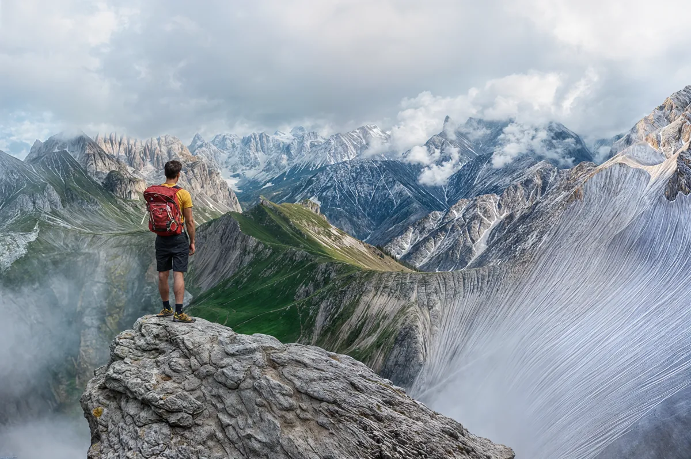

Converting Low-Resolution Images to HD vs Resizing by Pixels or KB: Which Tool to Use

"Resize this image" means two opposite things depending on who is asking. When a designer or print shop says a photo is too small, they mean it lacks pixel detail and needs to be enlarged without turning blurry. When a government portal, job application form or e-commerce CMS rejects your upload, it usually means the file dimensions or kilobyte count are too large. Using a simple pixel stretcher for the first problem ruins image quality, and using a 16K AI upscaler for the second problem creates a file ten times heavier than the form allows.
When to convert low-resolution images to HD with AI
If your source image looks soft, blocky from old JPEG compression, or too small to fill a modern 2K or 4K layout, pixel math alone cannot save it. You need to convert low-resolution images to HD using a neural super-resolution model that rebuilds edges, removes compression artifacts and restores fine surface texture.
On Monipix, the HD Image Converter accepts JPG, PNG, WebP and HEIC files up to 50 MB each, lets you upload up to 10 photos in a single batch, and outputs clean, watermark-free files at 2x, 4x, 8x or 16x scale (covering 2K, 4K, 8K and 16K). Each image costs 1 credit at any scale, and signed-in free accounts receive 10 monthly credits that reset every 30 days. It works well on old family snapshots, supplier catalog images, anime and digital illustrations, and AI art generated at small preview resolutions.
When to use a deterministic in-browser resizer instead
Sometimes your photo is already sharp, and the only obstacle is a strict upload specification: a marketplace requires 1,200 × 1,200 pixels, a blog column needs a 50% downscale, or an online form demands a portrait under 100 KB. That is the job for a client-side online image resizer rather than an AI generator.
Monipix's Image Resizer is completely free, requires no sign-up and zero credits, and runs entirely inside your browser so the photo is never uploaded to a server. You can resize in three modes:
- By exact width × height in pixels for thumbnails, social headers and store listings.
- By percentage (including up to 400%, though enlarging here only stretches pixels—use the AI upscaler whenever you need sharp enlargement).
- By target file size in KB—such as 20 KB, 50 KB, 100 KB or 200 KB—for passport portals, exam registrations and email attachments.
Format rules and practical edge cases
Knowing the format quirks between the two tools saves you from unexpected exports:
- HEIC photos from iPhones. The AI Upscaler and HD Image Converter accept HEIC directly up to 50 MB. The in-browser Image Resizer opens JPG, PNG, WebP, GIF, BMP and AVIF up to 50 MB (capping outputs near 16 megapixels), so convert HEIC files first if you need exact KB targeting.
- Transparency and animated GIFs. In the browser resizer, saving a transparent PNG or WebP as a JPG fills transparent areas with solid white, and animated GIFs export as a single static frame.
- Combining both in a two-step workflow. When a portal demands both sharp detail and a strict pixel width—for example, when you only have a blurry 300-pixel headshot for a 1,200-pixel directory—run a 4x pass in the HD Image Converter first (1 credit), then drop the crisp 1,200-pixel result into the free Image Resizer to dial in the exact kilobyte cap.
Comparison at a glance
| Requirement | HD Image Converter (AI) | Image Resizer (In-Browser) |
|---|---|---|
| Primary goal | Enlarge 2x–16x and rebuild sharp detail | Hit exact pixel dimensions, % or KB file size |
| Batch size | Up to 10 images at once | 1 image at a time |
| Supported inputs | JPG, PNG, WebP, HEIC (up to 50 MB) | JPG, PNG, WebP, GIF, BMP, AVIF (up to 50 MB) |
| Privacy & upload | Processed on cloud GPUs; removable from history | 100% local in browser; never uploaded |
| Cost | 1 credit per image (10 free/month) | Free, no sign-up, 0 credits |